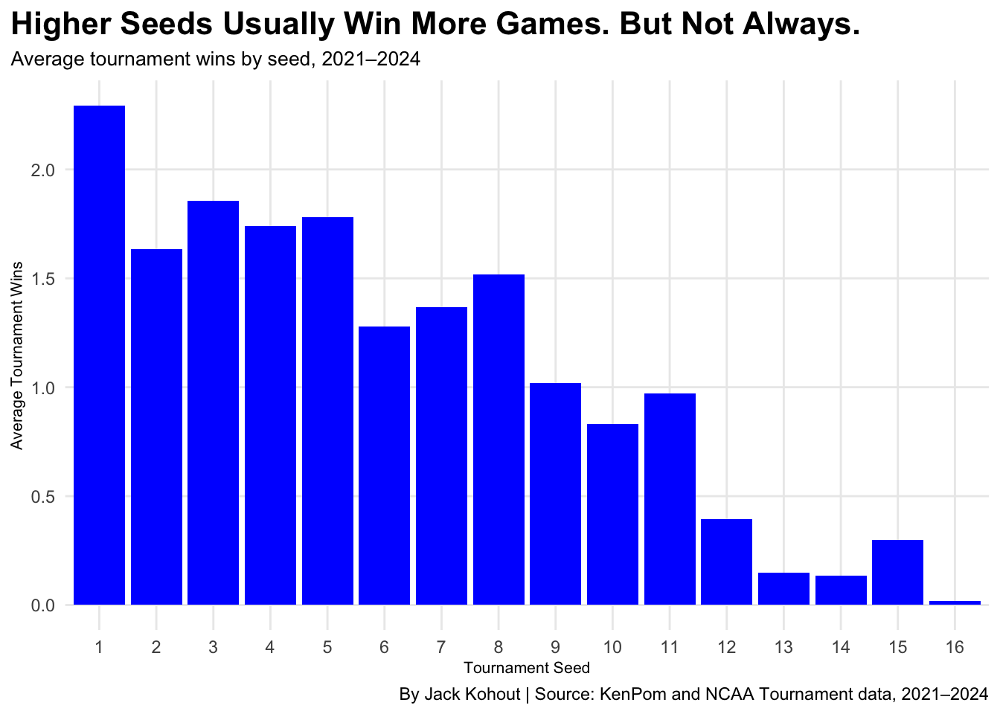
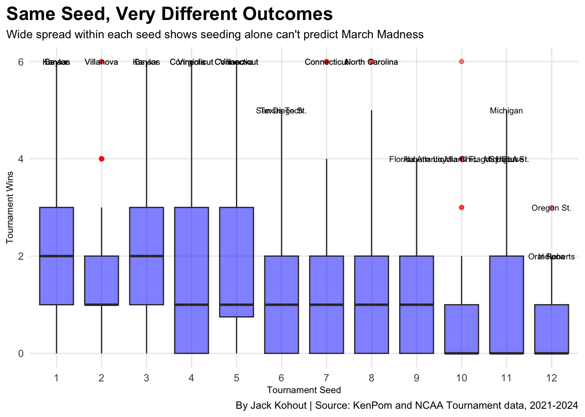

March Madness Isn’t Random. We Just Seed It That Way
NCAA
Basketball
March-Madness
Author
Jack Kohout
Published
April 10, 2026
Code
library(tidyverse)
── Attaching core tidyverse packages ──────────────────────── tidyverse 2.0.0 ──
✔ dplyr 1.1.4 ✔ readr 2.1.6
✔ forcats 1.0.1 ✔ stringr 1.6.0
✔ ggplot2 4.0.1 ✔ tibble 3.3.1
✔ lubridate 1.9.4 ✔ tidyr 1.3.2
✔ purrr 1.2.1
── Conflicts ────────────────────────────────────────── tidyverse_conflicts() ──
✖ dplyr::filter() masks stats::filter()
✖ dplyr::lag() masks stats::lag()
ℹ Use the conflicted package (<http://conflicted.r-lib.org/>) to force all conflicts to become errors
Code
library("ggrepel")
Every March, millions of brackets get busted within days. Upsets, buzzer beaters, and Cinderella runs make the NCAA Tournament feel completely unpredictable. But what if it’s not? What if the teams that win are actually telling us who they are long before the tournament starts?
This project looks at whether NCAA Tournament success is truly random, or if the numbers do a better job predicting winners than seeding alone.
To start, let’s look at the last four tournaments and ask a simple question: do teams with the same seed actually perform the same?
The table above makes one thing clear and thats seeding is not a guarantee of anything. Every seed from 1 through 10 has produced teams that lost immediately and teams that made deep runs. Even the top seeds, which carry the highest expectations, still show a wide range of outcomes from year to year. But looking at individual extremes can be misleading.
To get a clearer picture, it helps to zoom out and look at averages. Does seeding still matter when you look at the bigger pattern across all four tournaments?
Code
seed_avg <- Final_data |>group_by(seed) |>filter(seed !="NA") |>summarise(avg_wins =mean(tournament_wins))ggplot(seed_avg, aes(x =factor(seed), y = avg_wins)) +geom_col(fill ="Blue") +labs(title ="Higher Seeds Usually Win More Games. But Not Always.",subtitle ="Average tournament wins by seed, 2021–2024",x ="Tournament Seed",y ="Average Tournament Wins",caption ="By Jack Kohout | Source: KenPom and NCAA Tournament data, 2021–2024" ) +theme_minimal() +theme(plot.title =element_text(size =16, face ="bold"),plot.title.position ="plot",plot.subtitle =element_text(size =10),axis.title =element_text(size =8),panel.grid.minor =element_blank() )

On average, higher seeds do win more games. The trend is real. But averages can hide a lot of noise, and this one does. A seed’s average win total tells you where most teams end up, but it doesn’t tell you how wide the range of outcomes actually is.
A 1 seed that loses in the first round counts the same as one that wins the national championship when you’re computing an average. Chart 3 pulls that curtain back by showing the full spread of wins within each seed, making it easier to see just how unpredictable March Madness remains even for the best teams in the country.
Code
Final_data |>filter(seed <=12) |>ggplot(aes(x =factor(seed), y = tournament_wins)) +geom_boxplot(fill ="Blue", alpha =0.5, outlier.color ="Red") +geom_text(data = Final_data |>filter(seed <=12) |>group_by(seed) |>filter(tournament_wins >mean(tournament_wins) +1.0) |>slice_max(tournament_wins, n =2),aes(label = team), size =2.5) +labs(title ="Same Seed, Very Different Outcomes",subtitle ="Wide spread within each seed shows seeding alone can't predict March Madness",x ="Tournament Seed",y ="Tournament Wins",caption ="By Jack Kohout | Source: KenPom and NCAA Tournament data, 2021-2024" ) +theme_minimal() +theme(plot.title =element_text(size =16, face ="bold"),plot.title.position ="plot",plot.subtitle =element_text(size =10),axis.title =element_text(size =8),panel.grid.minor =element_blank() )
Warning: Removed 8 rows containing missing values or values outside the scale range
(`geom_text()`).

Even after looking at averages and distributions, one question keeps coming up: if seeding can’t fully explain what happens in March, what can? Seeds are assigned based on regular season performance and judgment by the committee, but they don’t directly measure how good a team actually is on the court.
That’s where advanced efficiency metrics come in. KenPom’s adjusted efficiency margin measures how much better or worse a team scores relative to its opponents, adjusted for the quality of competition. If anything predicts tournament success, it should be that.